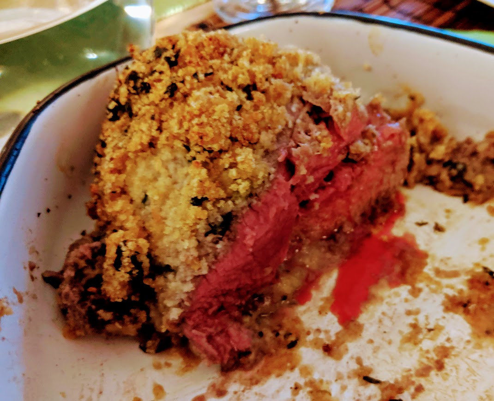

Filets d'agneau en croûte d'épices

Pour trois personnes :
- 600g de filet d'agneau
- Deux gousses d'ail
- 80g de chapelure
- Un citron vert
- Un citron jaune
- Une cuillère à café de cumin
- Une cuillère à café de cannelle
- Une cuillère à café de coriandre en poudre (ou de curry, à défaut de coriandre)
- Pas mal de coriandre fraîche
- Sel, poivre, huile d'olive
- Éplucher et écraser l'ail, zester le citron vert, récupérer le jus des citrons.
- Dans un petit saladier, mélanger la chapelure avec toutes les épices, le sel, le poivre, la coriandre fraîche, l'ail, le jus des deux citrons et quatre cuillères à soupe d'huile d'olive. Ça doit avoir une consistance de crumble avant cuisson (quand on tasse un peu, ça prend une forme un peu compacte ; mais on peut toujours l'émietter), on peut rajouter un peu d'eau si c'est trop poudreux.
- Faire préchauffer le four à 200°C. Huiler le fond d'un plat à gratin, y disposer les filets d'agneau, les saler et poivrer légèrement, et les recouvrir de croûte d'épices (en la compactant).
- Enfourner pour environ un quart d'heure — mais si possible, demander confirmation au boucher pour le temps de cuisson (ça dépend de la viande). Servir chaud.
Retour à la liste des recettes